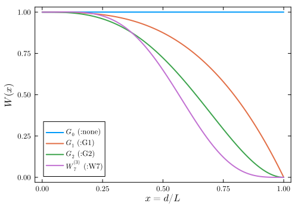
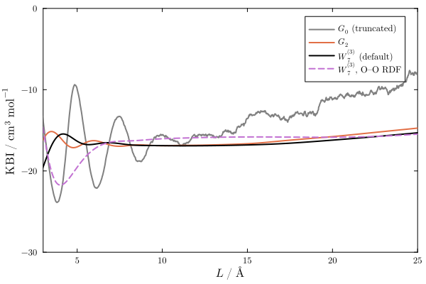
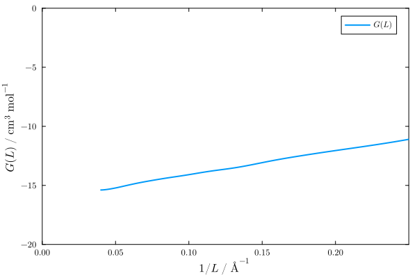
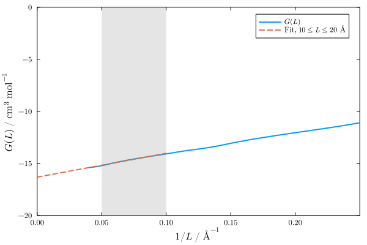
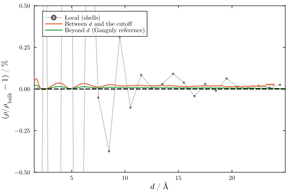

Kirkwood-Buff integrals
Computing KBIs: the kbi function
The Kirkwood-Buff integrals (KBIs) of a Result object are obtained with the kbi function:
G = kbi(R)which returns the KBI, in cm³ mol⁻¹, as a function of the upper limit of integration, $L$, for each distance of R.d. The R.kb field of the Result contains the same values, R.kb == kbi(R). The kbi function allows choosing the corrections applied, and computes the KBIs with the current definitions for results saved with previous versions of the package, in which R.kb contained the uncorrected KBI. By default, the KBI is computed with a weight function that corrects for the truncation of the integral at a finite distance, and with a reference density that corrects for the finite number of molecules in the simulation box, as explained below. The corrections apply to minimum-distance distribution functions (MDDFs), thus to solutes and solvents of any shape, and to radial distribution functions (RDFs), which are MDDFs of single-atom solutes and solvents.
The uncorrected (truncated) integral of the MDDF is obtained with kbi(R; correction=:none, normalization=:mddf).
The kbi function was introduced in version 2.19.0. Its application to MDDFs, the :W7 correction, and the normalization option were introduced in version 3.0.0, in which the defaults were set to correction=:W7 and normalization=:ganguly, and R.kb was set to kbi(R). In previous versions, R.kb contained the uncorrected KBI.
Theory in brief
The truncated KBI
The KBI of a pair of species is, in the thermodynamic limit, the integral of the excess density of the solvent around the solute over all space. In terms of the minimum-distance distribution function, $g(d)$,
\[G_\infty = \int_0^\infty \left[g(d) - 1\right] \frac{dV(d)}{dd}\, dd\]
where $V(d)$ is the volume of the domain within a minimum distance $d$ of the solute (for single-atom solutes, $dV/dd = 4\pi d^2$, and $g(d)$ is the RDF). In a simulation, $g(d)$ is known only up to a finite distance, and the integral must be truncated at $L$. The truncated integral, $G_0(L)$, converges poorly with $L$: the oscillations of $g(d) - 1$ are amplified by the volume element, and the integral oscillates around its limiting value even at long distances.
Weight functions
Weight functions that estimate $G_\infty$ from the RDF known up to $L$ were derived from the theory of finite-volume KBIs (Krüger et al., 2013; Krüger and Vlugt, 2018):
\[G_W(L) = \int_0^L \left[g(d) - 1\right] \frac{dV(d)}{dd}\, W(d/L)\, dd\]
These weights follow from a purely mathematical identity, valid for any one-dimensional integral, from which they can be generalized to a family of weights, $W_n^{(k)}(x)$, that vanish more smoothly at $x = d/L = 1$ (Santos, 2018). Since the identity does not depend on the origin of the integrand, the weights can be applied to the KBI computed from MDDFs. The available weights are:
correction | Weight, $W(x)$, $x = d/L$ | |
|---|---|---|
:none (or :G0) | $1$ | The truncated integral. Large oscillations. |
:G1 | $1 - x^3$ | (Krüger et al., 2013) |
:G2 | $1 - \frac{23}{8}x^3 + \frac{3}{4}x^4 + \frac{9}{8}x^5$ | (Krüger and Vlugt, 2018, Eq. 24) |
:W7 | $(1-x)^4 (1 + \frac{35}{16}x)(1 + \frac{1225}{256}x^2)(1 + \frac{29}{16}x + \frac{5}{4}x^2 + \frac{5}{16}x^3)$ | (Santos, 2018). Default. |
The weights go to zero at $d = L$, thus the oscillations of $g(d)$ near the truncation point do not propagate to the integral:
using Plots, LaTeXStrings
Plots.default(fontfamily="Computer Modern", linewidth=2, framestyle=:box, grid=false)
x = range(0, 1, length=200)
W7(x) = (1-x)^4 * (1 + 35x/16) * (1 + 1225x^2/256) * (1 + 29x/16 + 5x^2/4 + 5x^3/16)
plot(x, ones(length(x)); label=L"$G_0$ (:none)")
plot!(x, @. 1 - x^3; label=L"$G_1$ (:G1)")
plot!(x, @. 1 - 23/8 * x^3 + 3/4 * x^4 + 9/8 * x^5; label=L"$G_2$ (:G2)")
plot!(x, W7.(x); label=L"$W_7^{(3)}$ (:W7)")
plot!(xlabel=L"x = d/L", ylabel=L"W(x)", size=(500, 350))
The weights correct the truncation of the integral when $g(d) - 1$ oscillates around zero at $L$. They do not correct slowly decaying (monotonic) tails of the distribution, nor errors in the reference density.
The weighted integrals are direct estimates of $G_\infty$, and need not be extrapolated (see Finite-volume KBIs and extrapolation). The price of the weights is a smooth bias, $\sum_{k \geq 3} w_k S_k / L^k$, where $w_k$ are the coefficients of the polynomial $W(x)$ and $S_k = \int \left[g(d) - 1\right] d^k\, dV(d)$ are the moments of the integrand. The bias vanishes as $1/L^3$ for large $L$, if the integrand vanishes beyond a distance shorter than $L$. For large solutes, the moments of the integrand of the MDDF are large (the volume element is proportional to the surface of the solute), and the weighted KBI may approach its limit slowly, while the truncated integral is already stable. Thus, comparing both is advisable.
Reference density
The distribution function is the ratio between the density of the solvent at each distance and a reference density, which must be the density of the solvent in the bulk. In a simulation with a fixed number of molecules, the accumulation (or depletion) of solvent molecules around the solute changes the density of the rest of the box, and an inaccurate reference density causes a drift of the KBI at long distances, because the volume element grows with $L$. Two normalizations are available:
normalization=:mddf: the reference density is the bulk density of the solvent,R.density.solvent_bulk, estimated from the region beyond the cutoff, at all distances. This is the normalization of the MDDF,R.mddf, thus the KBI is the integral ofR.mddf.normalization=:ganguly(default): the reference density at each distance $d$ is the density of the solvent outside the domain within $d$,\[\rho_{\rm ref}(d) = \frac{N - N_{\rm in}(d)}{V - V(d)}\]
where $N$ is the number of solvent molecules (minus one if the solute and the solvent are the same), $N_{\rm in}(d)$ is the average number of solvent molecules within $d$, and $V$ is the volume of the box. This is the correction for closed systems (Ganguly and van der Vegt, 2013).
If the two normalizations give different KBIs at the distances of interest, the estimate of the reference density is a source of error that must be considered. The density of the solvent in different regions of the system can be inspected with the reference_density function (see Inspecting the reference density below).
Example: water
Here we use the distribution functions of a simulation of pure water (6845 molecules, cubic box of ~58.7 Å), computed up to 25 Å. In rw_20_25.json the solute and the solvent are the complete water molecules, thus the distribution is an MDDF. In rwO_20_25.json they are the oxygen atoms only, thus the distribution is the O–O RDF:
using ComplexMixtures
using LazyArtifacts
using ComplexMixtures: test_file
R = load(test_file("namd_rw_20_25.json"))
RO = load(test_file("namd_rwO_20_25.json"))
R.solute.natomspermol, RO.solute.natomspermol(3, 1)Running KBIs
The kbi function returns the KBIs as a function of the upper limit of integration, L, which corresponds to the distances of R.d:
g0 = kbi(R; correction=:none, normalization=:mddf) # truncated
g2 = kbi(R; correction=:G2)
w7 = kbi(R) # correction=:W7, normalization=:ganguly
w7O = kbi(RO) # O-O RDF
plot(R.d, g0; label=L"$G_0$ (truncated)", color=:gray)
plot!(R.d, g2; label=L"$G_2$")
plot!(R.d, w7; label=L"$W_7^{(3)}$ (default)", color=:black)
plot!(RO.d, w7O; label=L"$W_7^{(3)}$, O–O RDF", linestyle=:dash)
plot!(xlabel=L"L~/~\mathrm{\AA}", ylabel=L"\mathrm{KBI}~/~\mathrm{cm^3~mol^{-1}}", ylims=(-30, 0), xlims=(3, 25), size=(600, 400))
The truncated integral, $G_0$, oscillates significantly, and drifts upwards at long distances. The weighted integrals reach a plateau at about 8 Å. A good estimate of $G_\infty$ is the average value of the weighted KBI in the plateau:
using Statistics
plateau = findall(L -> 8 <= L <= 15, R.d)
mean(w7[plateau]), std(w7[plateau])(-16.8711475283853, 0.03198386072765374)The value obtained from the MDDF is similar to that obtained from the O–O RDF:
plateau = findall(L -> 10 <= L <= 20, RO.d)
mean(w7O[plateau]), std(w7O[plateau])(-15.866350243636592, 0.05619746753968729)At distances larger than ~15 Å, the KBI computed from the MDDF drifts upwards. The weights and the Ganguly normalization reduce the drift, but do not remove it. Since this drift is not a truncation effect, it is probably associated with the sampling or with the estimate of the reference density, and the values at shorter distances are preferable.
As a reference, the KBI of a pure liquid is related to its isothermal compressibility, $\kappa_T$, by $G_\infty = RT\kappa_T - 1/\rho$, where $\rho$ is the molar density. For water at 298 K, the experimental value is $G_\infty \approx 1.1 - 18.1 \approx -17$ cm³ mol⁻¹. The exact value obtained from the simulation depends on the water model, and on the sampling.
Finite-volume KBIs and extrapolation
For radial distribution functions, an alternative estimate of $G_\infty$ is provided by the theory of finite-volume KBIs (Krüger et al., 2013; Krüger and Vlugt, 2018). The KBI of a sphere of diameter $L$ is
\[G(L) = \int_0^L h(r)\, 4\pi r^2 \left(1 - \frac{3}{2}x + \frac{1}{2}x^3\right) dr, \quad x = \frac{r}{L},\]
where $r$ is the distance between two points inside the sphere. For large $L$, $G(L) = G_\infty + F_\infty/L + O(1/L^2)$, where $F_\infty$ is a surface term. $G(L)$ is not an estimate of $G_\infty$, but $G_\infty$ can be obtained by extrapolating $G(L)$ to $1/L \to 0$.
The weighted KBIs of the previous section are related to this theory, but do not require extrapolation. The $1/L$ term is a surface effect of the subvolume (pairs of molecules near its boundary have partners outside it), which is absent from the running integrals around a molecule. The :G1 weight, $1 - x^3$, is exactly $d[L\,G(L)]/dL$: if $G(L) = G_\infty + F_\infty/L$, this derivative is $G_\infty$. The weighted integrals are thus the extrapolation performed analytically, and, when they are flat as a function of $L$, there is nothing left to extrapolate.
The finite-volume theory concerns two-point integrals over open spherical subvolumes, and the interpretation of $G(L)$ as the KBI of a subvolume holds only for RDFs. For an MDDF there is no corresponding spherical subvolume (the region within a distance of the solute has a shape that depends on the solute). Applied to the integrand of an MDDF, the formula above still tends to $G_\infty$ as $L \to \infty$, as does any weighted integral with $W(0) = 1$, but the $1/L$ dependence is not justified, and the slope of the extrapolation has no physical meaning. Thus, finite_volume_kbi is meant for single-atom solutes (it issues a warning otherwise), and uses the distribution of the distances to the reference atom of the solvent (R.rdf_count).
The finite_volume_kbi function computes the finite-volume KBIs of spheres of diameter $L$, for all $L$ up to the cutoff. The plot of $G(L)$ as a function of $1/L$ must be linear for large enough $L$:
fv = finite_volume_kbi(RO)FiniteVolumeKBI with 1250 points:
L from 0.02 to 25.0 Å
G(L) at the largest L: -15.389 cm³ mol⁻¹plot(1 ./ fv.L, fv.G; label=L"G(L)")
plot!(xlabel=L"1/L~/~\mathrm{\AA^{-1}}", ylabel=L"G(L)~/~\mathrm{cm^3~mol^{-1}}", xlims=(0, 0.25), ylims=(-20, 0), size=(600, 400))
The function extrapolate_kbi fits the linear relation to the data in a range of values of $L$, and returns the intercept, $G_\infty$, and the slope, $F_\infty$. Here, we use $10 \leq L \leq 20$ Å:
ext = extrapolate_kbi(fv, (10.0, 20.0))(Ginf = -16.319228329820294, F = 22.82704237087549)The line obtained can be compared with the data, to check if the relation is linear in the range chosen:
x = range(0, 0.1, length=10)
plot!(x, ext.Ginf .+ ext.F .* x; label=L"Fit, $10 \leq L \leq 20$ Å", linestyle=:dash)
vspan!([1 / 20, 1 / 10]; alpha=0.2, color=:gray, label=nothing)
The extrapolated value is consistent with the plateau of the weighted KBIs. The result of the extrapolation should not depend much on the range of $L$ used. This must be checked, because the linear relation is valid only for $L$ larger than the correlation length of the fluid, and the data at large $L$ may be affected by the drift discussed above:
for Lrange in ((8.0, 16.0), (10.0, 20.0), (10.0, 25.0), (15.0, 25.0))
(; Ginf, F) = extrapolate_kbi(fv, Lrange)
println("L range: $Lrange Å: Ginf = $(round(Ginf; digits=2)) cm³/mol, F = $(round(F; digits=1)) cm³ Å/mol")
endL range: (8.0, 16.0) Å: Ginf = -16.09 cm³/mol, F = 20.0 cm³ Å/mol
L range: (10.0, 20.0) Å: Ginf = -16.32 cm³/mol, F = 22.8 cm³ Å/mol
L range: (10.0, 25.0) Å: Ginf = -16.36 cm³/mol, F = 23.3 cm³ Å/mol
L range: (15.0, 25.0) Å: Ginf = -16.42 cm³/mol, F = 24.6 cm³ Å/molInspecting the reference density
The reference_density function computes the density of the solvent in different regions of the system, relative to the bulk density (estimated beyond the cutoff): the density in shells around the solute, the density between each distance $d$ and the cutoff, and the density beyond $d$, which is the reference density of the Ganguly normalization:
rd = reference_density(R)ReferenceDensity: densities relative to the bulk density (0.0337988 molecules/ų)
Density beyond d, at d = 0.02 Å: 0.99995
Density between d = 23.99 Å and the cutoff: 1.00025plot(rd; size=(600, 400))
The plot shows the deviations of these densities from the bulk density, in percent. Beyond the correlation length of the distribution, all deviations should be close to zero. Here, for water, they are smaller than 0.1%, except for the noise of the density in the shells. The density beyond $d$ is the reference density of the Ganguly normalization, and its deviation is the one that affects the KBIs. The density between $d$ and the cutoff is a more sensitive indicator of the non-uniformity of the density, because the deviation of the density beyond $d$ is diluted by the volume beyond the cutoff. If the density between $d$ and the cutoff varies as $d$ approaches the cutoff, or if the densities are systematically different from one, the density of the solvent is not uniform beyond the correlation length. This may be caused by insufficient sampling or by long-range effects, and the KBIs will depend on the reference density used to normalize them.
Interpreting the results
Use
kbi(R). Plot the KBI as a function of $L$, and report the value (or average) in the range where it is stable. Compare the results obtained with the different corrections and normalizations: the differences between them are an indication of the uncertainty of the result.Drifts at long distances. If all estimates drift at long distances, the drift is not a truncation effect. It usually indicates an imprecise estimate of the reference density, insufficient sampling, or a slowly decaying tail of the distribution. In this case, use the values at shorter distances, where the estimates are stable, increase the sampling (for example, by performing multiple independent simulations and merging the results with
merge), or increase the size of the simulation box.Extrapolation. For RDFs, the extrapolation of the finite-volume KBIs is a cross-check of the weighted estimates. It relies on a fit whose result depends on the range of $L$, and involves an extrapolation from $1/L \sim 0.05$ Å⁻¹ to zero, which amplifies the noise.
Group contributions. The decomposition of the KBI into contributions of groups of atoms (
contributionswithtype=:kbi) accepts the samecorrectionandnormalizationoptions, and the contributions sum to the KBI computed bykbiwith the same options.
Reference functions
ComplexMixtures.kbi — Function
kbi(R::Result; correction::Symbol=:W7, normalization::Symbol=:ganguly)Compute the Kirkwood-Buff integral (KBI) from the results of a minimum-distance distribution function (MDDF) calculation, R, as a function of the upper limit of integration, $L$.
Returns a vector with the same length as R.d, in cm³ mol⁻¹, where element i is the KBI computed with $L$ equal to the upper limit of bin i. R.kb contains the KBI computed with the default options, R.kb == kbi(R).
Keyword arguments
correction: the weight function that corrects for the truncation of the integral at $L$::W7(default): the $W_7^{(3)}$ weight of Santos.:G2: the weight of Krüger and Vlugt (Eq. 24).:G1: the weight of Krüger et al., $1 - (d/L)^3$.:none(or:G0): no weight, the truncated integral.
normalization: the reference density of the solvent::ganguly(default): the density of the solvent outside the domain of the solute within each distance, following Ganguly and van der Vegt.:mddf: the bulk density of the solvent (estimated beyond the cutoff), at all distances, which is the normalization ofR.mddf.
The corrections apply to MDDFs, thus to solutes and solvents of any shape, and to radial distribution functions. Report the value (or average) of the KBI in the range of $L$ where it is stable. The differences between the results obtained with different corrections and normalizations are an indication of the uncertainty of the result.
See the Kirkwood-Buff integrals section of the manual for a description of the corrections, references, and examples.
Examples
julia> R = load("result.json");
julia> G = kbi(R); # W₇⁽³⁾ weight, Ganguly normalization
julia> G == R.kb
true
julia> G0 = kbi(R; correction=:none, normalization=:mddf); # truncated integral of the MDDFSee also finite_volume_kbi, extrapolate_kbi, and reference_density.
This function was introduced in version 2.19.0. The :W7 correction and the normalization keyword were introduced in version 3.0.0, in which the corrections were extended to MDDFs, and the defaults were changed from correction=:none (and the normalization of the MDDF) to correction=:W7, normalization=:ganguly. Since version 3.0.0, R.kb is equal to kbi(R).
ComplexMixtures.reference_density — Function
reference_density(R::Result; shell_width::Real=1.0)Compute the density of the solvent in different regions of the system, relative to the bulk density of the solvent, R.density.solvent_bulk, which is estimated from the region beyond the cutoff. The result is a ReferenceDensity object.
For each distance $d$ to the solute, the following densities are computed:
outside: the density beyond $d$, $\rho_{\rm out}(d) = [N - N_{\rm in}(d)]/[V - V(d)]$, which is the reference density of the Ganguly normalization ofkbi.window: the density between $d$ and the cutoff (not computed withinshell_widthof the cutoff).shell: the density in shells of widthshell_width.
The density beyond $d$ is the reference density of the Ganguly normalization. Its deviation from the bulk density is the deviation of the density between $d$ and the cutoff, scaled by the fraction of the volume beyond $d$ that is within the cutoff. Thus, the density between $d$ and the cutoff is the most sensitive indicator of the non-uniformity of the density, while the density beyond $d$ is the one that affects the KBIs computed with the Ganguly normalization.
If the bulk density is properly estimated, all these ratios must be close to one, for $d$ beyond the correlation length of the distribution. A density in the window that varies as $d$ approaches the cutoff, or that is systematically different from one, indicates that the density of the solvent is not uniform beyond the correlation length, which may be caused by insufficient sampling or by long-range effects. In this case, the KBIs depend on the reference density used for their normalization.
With Plots loaded, the result can be plotted with plot(reference_density(R)).
Example
julia> using ComplexMixtures, Plots
julia> R = load("result.json");
julia> rd = reference_density(R)
julia> plot(rd)ComplexMixtures.ReferenceDensity — Type
ReferenceDensityStructure that contains the estimates of the density of the solvent in different regions of the system, relative to the bulk density, as computed by reference_density.
Fields
d::Vector{Float64}: distances to the solute (Å).bulk::Float64: the bulk density of the solvent, estimated beyond the cutoff (molecules/ų).outside::Vector{Float64}: the density of the solvent beyond each distance, $\rho_{\rm out}(d)$, relative tobulk. This is the reference density of the Ganguly normalization ofkbi.window::Vector{Float64}: the density of the solvent between each distance and the cutoff, relative tobulk. It is not computed (NaN) for distances closer to the cutoff than the width of the shells, where the volume of the region is small and the estimate is noisy.shell_d::Vector{Float64}andshell::Vector{Float64}: the density of the solvent in shells of widthshell_width, relative tobulk, and the distances of the centers of the shells.
RecipesBase.plot — Method
plot(rd::ReferenceDensity; kargs...)Plot the deviations of the densities of the solvent in different regions of the system from the bulk density, in percent, as computed by reference_density: the density in shells around the solute, the density between each distance and the cutoff, and the density beyond each distance (the reference density of the Ganguly normalization of the KBIs).
Keyword arguments are passed to Plots.plot.
ComplexMixtures.finite_volume_kbi — Function
finite_volume_kbi(R::Result)Compute the finite-volume Kirkwood-Buff integrals $G(L)$ of spheres of diameter $L$, for each $L$ up to the cutoff of the distribution function, using the exact weight function of the sphere [1,2]:
\[G(L) = \int_0^L h(r) 4\pi r^2 \left(1 - \frac{3}{2}x + \frac{1}{2}x^3\right) dr, \quad x = r/L\]
where $h(r) = g(r) - 1$. For large $L$, $G(L) = G_\infty + F_\infty/L + O(1/L^2)$, where $G_\infty$ is the infinite-volume KBI and $F_\infty$ is a surface term. Thus, $G_\infty$ can be obtained by extrapolating $G(L)$ as a function of $1/L$ to $1/L \to 0$, which can be done with the extrapolate_kbi function.
Returns a FiniteVolumeKBI object, with fields L (Å) and G (cm³ mol⁻¹).
The finite-volume theory concerns two-point integrals over open spherical subvolumes, thus $G(L)$ is the KBI of a subvolume, and $F_\infty$ a surface term, only for radial distribution functions (the solute must contain a single atom per molecule). For an MDDF there is no corresponding spherical subvolume: the weighted integral still tends to $G_\infty$ as $L \to \infty$, as any weighted integral with $W(0) = 1$, but the $1/L$ dependence is not justified, and the slope of the extrapolation has no physical meaning. For MDDFs, use kbi.
The weighted estimates of kbi do not require extrapolation: the :G1 weight, $W(x) = 1 - x^3$, is $d[L\,G(L)]/dL$, which removes the $1/L$ term of $G(L)$ analytically. The extrapolation is useful when $G(L)$ is available but the running integrals around a molecule are not, or as a cross-check of the weighted estimates.
Example
julia> R = load("water.json");
julia> fv = finite_volume_kbi(R);
julia> using Plots
julia> plot(1 ./ fv.L, fv.G; xlabel="1/L (Å⁻¹)", ylabel="G(L) (cm³ mol⁻¹)")
julia> extrapolate_kbi(fv, (10.0, 20.0))
(Ginf = -16.3, F = 22.8)References
- P. Krüger, S. K. Schnell, D. Bedeaux, S. Kjelstrup, T. J. H. Vlugt, J.-M. Simon, Kirkwood–Buff Integrals for Finite Volumes. J. Phys. Chem. Lett. 4, 235 (2013). DOI: 10.1021/jz301992u
- P. Krüger, T. J. H. Vlugt, Size and shape dependence of finite-volume Kirkwood-Buff integrals. Phys. Rev. E 97, 051301(R) (2018). DOI: 10.1103/PhysRevE.97.051301
ComplexMixtures.extrapolate_kbi — Function
extrapolate_kbi(fv::FiniteVolumeKBI, Lrange::Tuple{Real,Real})
extrapolate_kbi(R::Result, Lrange::Tuple{Real,Real})Extrapolate the finite-volume KBIs $G(L)$ to the infinite-volume limit, by a linear least-squares fit of
\[G(L) = G_\infty + F_\infty \frac{1}{L}\]
to the data with Lrange[1] <= L <= Lrange[2] (in Å).
Returns a named tuple (Ginf, F), with the infinite-volume KBI, Ginf (cm³ mol⁻¹), and the surface term, F (cm³ mol⁻¹ Å).
The relation is valid only for $L$ larger than the correlation length of the fluid, and the result depends on the range chosen. Plot fv.G as a function of 1 ./ fv.L to choose a range where the dependence is linear.
If a Result object is provided, the finite-volume KBIs are computed with finite_volume_kbi.
ComplexMixtures.FiniteVolumeKBI — Type
FiniteVolumeKBIStructure that contains the finite-volume KBIs of spheres of diameter L, as computed by finite_volume_kbi.
Fields
L::Vector{Float64}: diameters of the spheres (Å).G::Vector{Float64}: finite-volume KBIs (cm³ mol⁻¹).